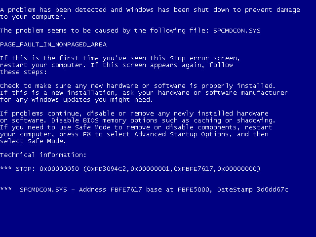

2006: Obsolescencia y Riesgo Lógico
El año 2006 se caracterizó por un estancamiento severo en la renovación tecnológica. La inestabilidad política del país (año de elecciones y cambios constitucionales) afectó las asignaciones presupuestarias. El resultado: gran parte del parque computacional llegó al final de su vida útil y no pudo ser reemplazado por equipos de marca.
Diagnóstico Situacional: Crítico
- 📉 Estado del Hardware: Parque mixto sin garantía vigente y con alta tasa de fallos.
- 💰 Presupuesto: Congelado por transición al "Plan Decenal de Educación".
- 🛠 Soporte Técnico: Modelo reactivo (El "Formateo" era la única solución diaria).
- ⚠️ Riesgo Principal: Pérdida masiva de tesis y trabajos por la epidemia de virus en USBs.
1. La Solución Económica: El auge de los "Clones"
Para suplir la falta de computadoras en los laboratorios, varias facultades optaron por adquirir equipos ensamblados localmente ("clones"). Si bien costaban la mitad que un equipo de marca (HP/IBM), su durabilidad en un entorno estudiantil de alto tráfico era muy baja.

Representación.- Entorno de trabajo típico en 2006. Monitores CRT que ocupaban gran parte del escritorio y generaban un alto consumo eléctrico.
| Característica | Equipo de Marca (Estándar Ideal) | Equipo "Clon" (Realidad UCE 2006) |
|---|---|---|
| Costo Promedio | $1.200 - $1.500 USD | $500 - $700 USD |
| Garantía | 3 años (Fabricante) | 6 meses - 1 año (Proveedor local) |
| Punto de Fallo | Raro (Piezas certificadas) | Frecuente (Fuentes de poder genéricas y placas madre incompatibles) |
2. La Epidemia Silenciosa: `autorun.inf`
2006 marcó la transición masiva del disquete a la Memoria USB. Sin embargo, la universidad no contaba con un antivirus corporativo gestionado. Windows XP ejecutaba automáticamente cualquier USB conectada, propagando virus instantáneamente.
[!] VECTOR: Archivo 'autorun.inf' en raíz de USB.
[!] ACCIÓN: Oculta carpetas originales y crea accesos directos (.lnk).
[!] RESULTADO: El estudiante cree que sus archivos se borraron.
[!] ESTADO UCE: Infección cruzada entre laboratorios y cibercafés externos.

Imagen Representación.- La "Pantalla Azul de la Muerte" (BSOD) y los errores de sistema eran la rutina diaria debido a drivers incompatibles y malware.
Fuentes y Contexto Histórico:
- Paper: "Tecnología en la educación ecuatoriana" (Mendoza-Bozada, 2020) Ver Página 499: Analiza el contexto del "Plan Decenal 2006", explicando la transición política que afectó las inversiones en infraestructura universitaria.
- Kaspersky Resource Center: Amenazas y Malware Base de conocimiento de seguridad que documenta la evolución de amenazas informáticas, incluyendo los gusanos de propagación por USB comunes en la época.